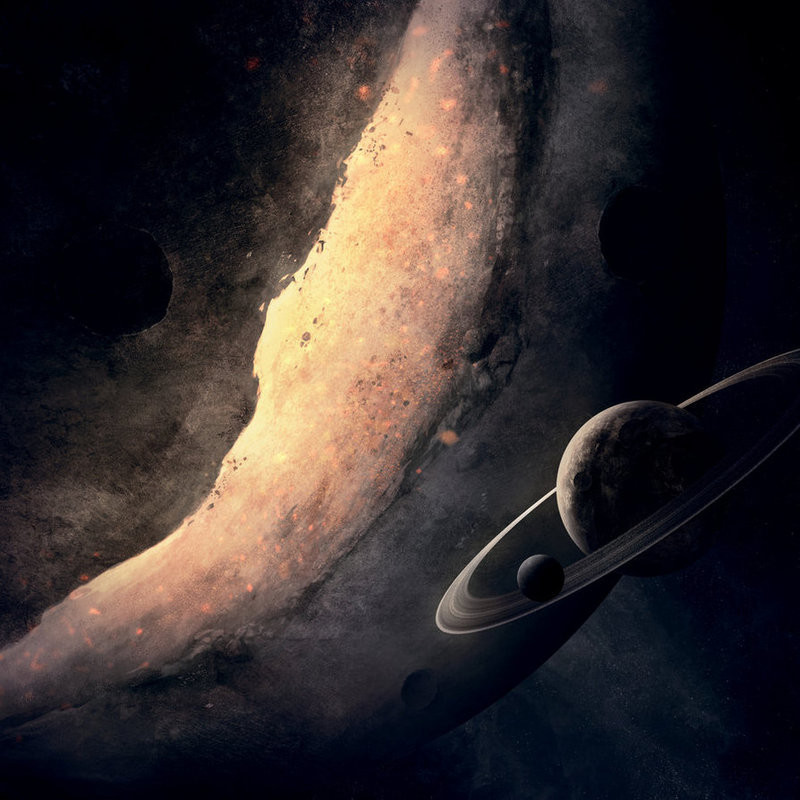

Celkem mám v plánu dva rozhovory a oba už jsou v podstatě připravené. Budou mít hodně společného - zaměření vyzpovídaných osob. Tvoří takzvaný "space-art" - grafiku zaměřenou na vesmír, planety, mlhoviny a podobné věci. I já měl vždycky takový styl rád, obrázky Měsíce, Země a všech možných planet mi zdobí pozadí v počítači již dlouho…
Všechny obrázky jsou k dispozici ve větším rozlišení na profilu Jespera (DeviantArt).
Můžeš se nám krátce představit? Odkud jsi, co tě baví…
Ahoj, jmenuji se Jesper Ullbing a žiji v docela malém městě ve Švédsku. Narodil jsem se v roce 1997 a mezi moje zájmy patří kromě grafiky také atletika, kterou provozuji třikrát do týdne. Také rád navrhuji mapy pro některé hry, v současnosti čekám na Cryengine 3, což je editor map pro Crysis 2. Také mne zajímá astronomie a počítače.
Kdy jsi začal dělat grafiku? Jak jsi se k tomu vlastně dostal? A proč sis vybral právě zaměření na “space-art”?
Umění mne vždycky zajímalo a také jsem byl vždy fascinovaný digitálními médii. Takže v létě 2009, když mi kamarád pověděl o programu na grafiku zadarmo, jsem začal objevovat počítačové umění. První výtvor na který si pamatuji, byl jednoduchý obrázek Země a Slunce. Upřímně nevím, proč jsem se rozhodl vytvářet grafiku s vesmírnými tématy. Asi jsem měl vždycky pro vesmír slabost.
Kolik hodin denně strávíš při vytváření grafiky?
V průměru kolem dvou a půl hodiny.

Máš nějaké vzory v oblasti designu? Nějakého výtvarníka, malíře, grafika?
Ano, pár jich mám. Někteří z mých přátel na DeviantArtu jsou úžasnými výtvarníky, ke kterým vzhlížím. Je těžké říct někoho konkrétního, ale možná že by to byl Greg Martin. Miluji jeho tvorbu!
Obligátní otázka - kde hledáš inspiraci?
Inspirace může přijít vcelku odkudkoliv, ale většinou se tak děje když odpočívám. Když napůl spím a napůl jsem vzhůru. Myslím, že mám nejlepší nápady protože nechávám myšlenky náhodně přicházet kdoví odkud.
Pravděpodobně pochází z něčeho, co jsem viděl dříve, jako nějaký cizí obraz, nebo nějaké zajímavé události. Rád poslouchám hudbu, když odpočívám, takže hodně inspirace pochází i z hudby. Někdy mne inspiruje nějaký pořad o vesmíru a někdy nápady přicházejí, když pracuji.
Který svůj kousek bys doporučil? Který je podle tebe nejlepší?
To je těžké říct, ale jsou dva výtvory, které mám opravdu rád - “Ermerald” a “The Tree”. Podle mne jsou to nejlépe provedená díla. “The Tree” mám rád, protože se velmi podobá tomu, jak jsem si ho v hlavě představoval. Pak je tu ještě spousta dalších, jako například “Time”, “Ring” anebo “Iter”.
Už tě potkal nějaký významnější úspěch díky tvé tvorbě? Nebo pořád čekáš?
Pár přátel mne žádalo o nějakou práci, většinou se jednalo o věci jako loga a grafické návrhy. Zkoušel jsem prodat několik výtisků, ale bez úspěchu. Takže asi stále čekám.
V čem svou grafiku tvoříš - jakým nástrojům dáváš přednost?
Pro veškerou práci používám Photoshop. Občas používám i program na vytváření 3D grafiky, ale nepříliš často. A když kreslím, tak preferuji tablet.
Jaké jsou tvoje plány do budoucnosti? Výstava? Revoluční výtvor? Nebo o něčem sníš?
V budoucnosti bych rád studoval umění na nějaké umělecké škole, chci se snát natolik dobrým, abych se grafikou uživil. Ale zatím to dělám pouze pro zábavu a příliš na vydělávání peněz nemyslím. Užívám si to a to je důvod, proč to chci dělat.